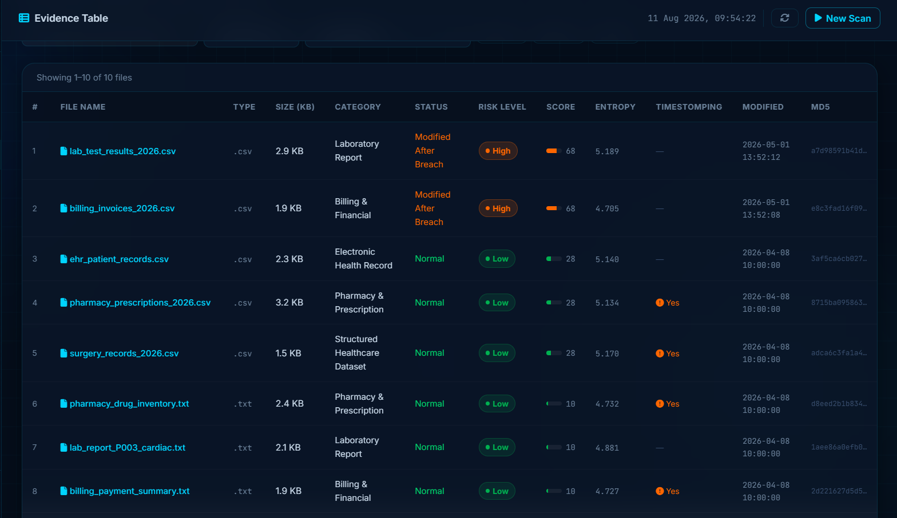
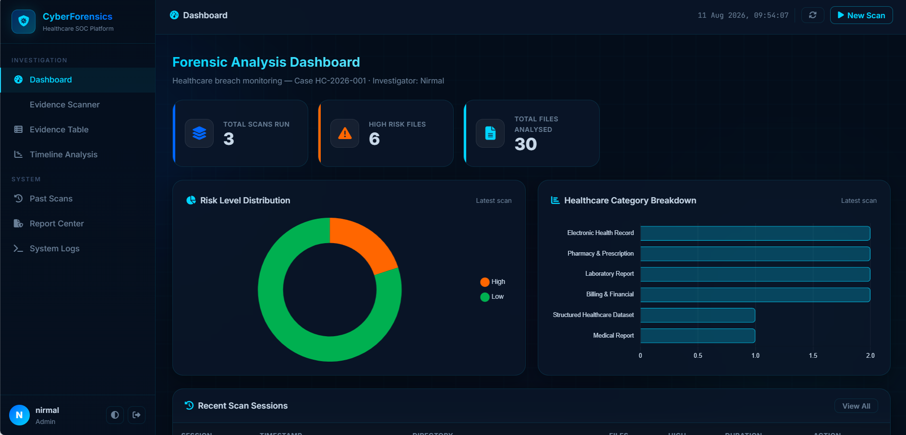

OVERVIEW
This project focuses on automating forensic data collection and analysis within AWS. Using Python 3 and the Boto3 SDK, the workflow parses CloudTrail audit logs to detect unauthorized access events and automatically preserves evidence in secure S3 buckets.
PROBLEM STATEMENT
In cloud environments, compromised resources can be altered or terminated before evidence is manually captured. The objective was to build an automated, rule-based response workflow to identify security events from audit logs and preserve evidence in centralized storage.
INTERFACE & LOG GALLERY
Click any screenshot below to inspect the Cloud Forensics Automation interface, rule detection pipeline, and execution logs in full screen.

🔍 CLICK TO EXPAND
01. Cloud Forensics Automation - Interface Overview

🔍 CLICK TO EXPAND
02. Forensic Log Parsing & Threat Detection Logic
IMPLEMENTATION & CHALLENGES
Wrote custom Python scripts leveraging the Boto3 SDK to process structured JSON event logs from AWS CloudTrail. Regex was used to identify specific pattern indicators such as privilege escalation calls and unauthorized configuration changes.
Challenge: Scoping IAM permissions safely to prevent function execution roles from having excessive access.
Solution: Enforced the principle of least privilege, restricting IAM policies line-by-line strictly to required evidence preservation API calls.